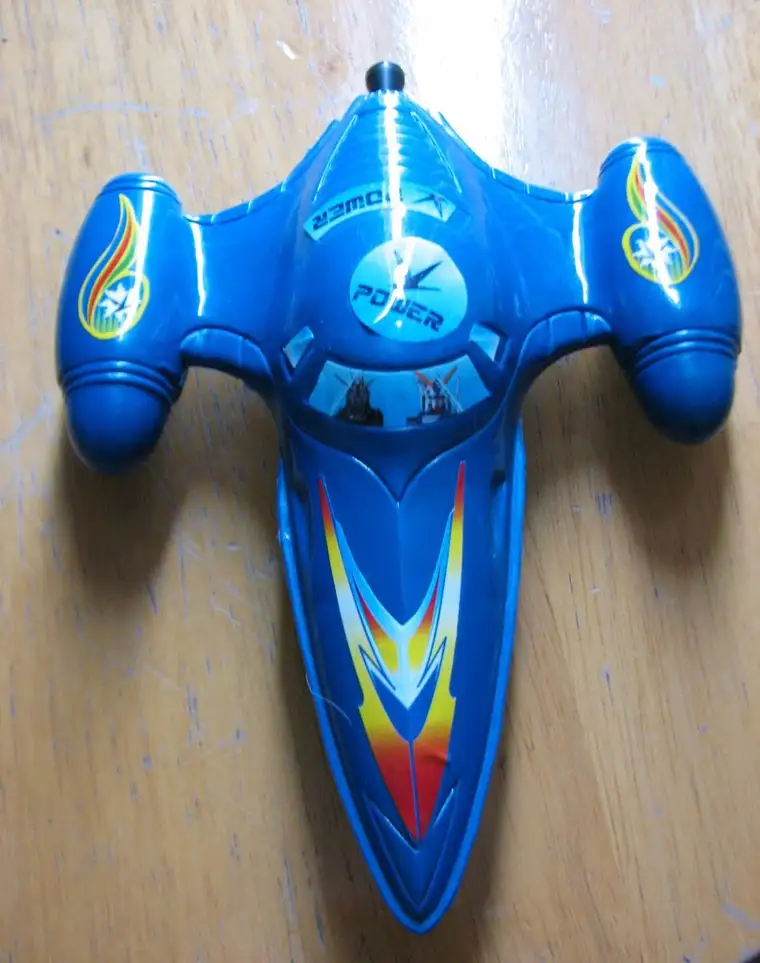

This morning, I took my fifthborn to his first dentist appointment. I still remember when, at the same tender age of 3, I was whisked away by my father from preschool and on to the dentist some 70 miles from our town, where I would have my first cavity filled. I’ve also retained the memory of kissing my father in the parking lot of the Red Owl grocery store afterwards, in gratitude for the ice-cream bar he’d bought me for my bravery, and asking him, “Doesn’t that feel funny, Daddy?” I thought certain that when he kissed me, he, too, could feel the funny sensation from my numbed, novacaine-injected mouth. He told this story many times afterwards, always with a smile, which explains why the memory has stayed strong all these years.
{kind=link}
Unfortunately, Nick has a few small cavities in a hard-to-reach spot (back, upper part of his mouth), and we’ll be dealing with those on another day, but from all accounts, he came out of his appointment today with flying colors. I think back to the days of introducing the world to my firstborn; how eager I was, and in contrast, how tenative he was to experience all the “firsts,” including the first dentist visit. Times have changed. When you’re number five and have experienced the dentist vicariously numerous times through your siblings, it’s a walk in the park. As for me, no longer a hovering mother, I sat peacefully in the waiting room this morning while my “baby” took his place in the dentist chair. Twenty minutes later, he emerged, having been examined and duly “flouridated” without incident.
While I chalk up some of this morning’s success to sibling influence, something else was at play, too: good old-fashioned bribery. Nick knew that if he did well, the coveted toy box awaited him, and he would leave with something cool. It took him all of about two seconds to pick out his prize — a blue toy airplane that looks just like the green one his brother earned a few weeks back. There are times I take issue with how our society indulges children with prizes. It’s hard to go anywhere without some lure of a toy or gadget for kids, and this, I believe, sets up our children to feel entitled to material “stuff” at every turn. At the same time, I’ve learned to pick my battles, and on this day bribery meant serenity, so I’m counting it as a win-win, for better or worse.